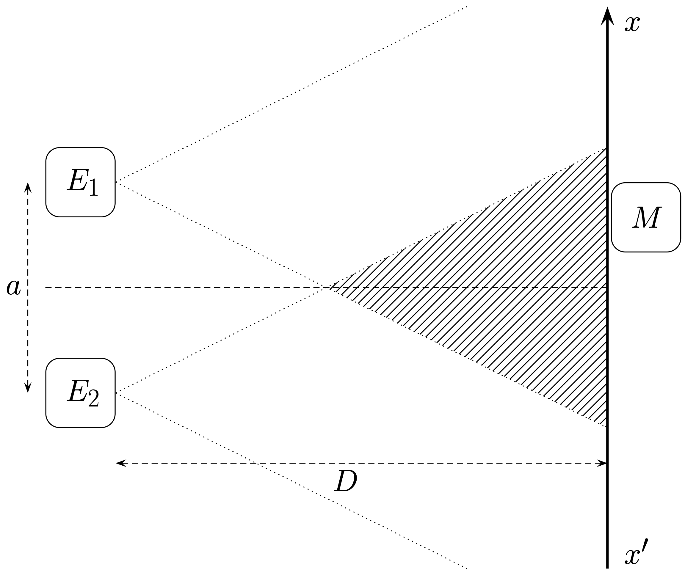

Interférences
On appelle interférence le résultat de la superposition de plusieurs ondes (mécaniques ou électromagnétiques) en un même point de l’espace.
En physique, on distingue normalement deux phénomènes particuliers qui se produisent lorsqu’on additionne des ondes sinusoïdales :
- L’interférence, quand les ondes ont la même fréquence.
- Le battement, quand les fréquences des ondes sont légèrement différentes.
Par la suite, toutes les ondes étudiées seront sinusoïdales, de même fréquence $f$.
Schéma de principe

Deux ondes sinusoïdales de même fréquence $f$ sont émises par les deux émetteurs $E_1$ et $E_2$. L’émission de ces ondes s’effectuant dans un cône, ces ondes ne se superposent que dans la zone hachurée sur le schéma : c’est le champ d’interférence. Dans toute cette région, ces ondes interférent.
[Lire]